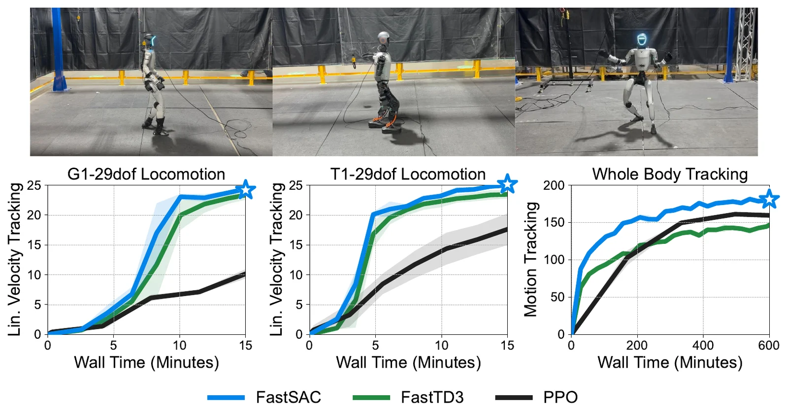
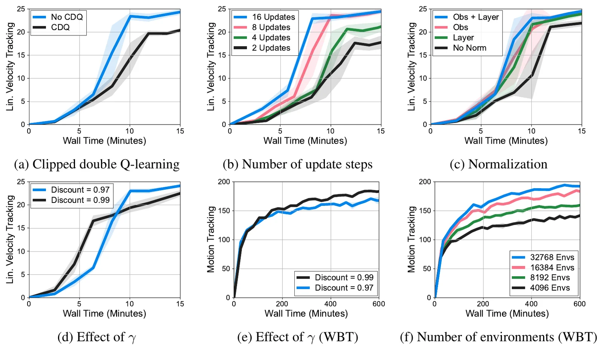
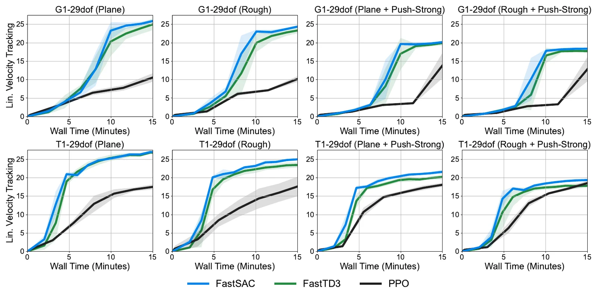
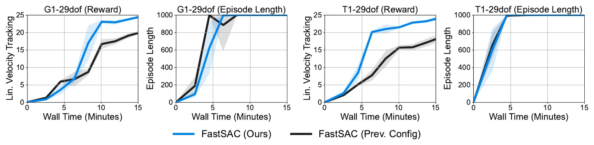
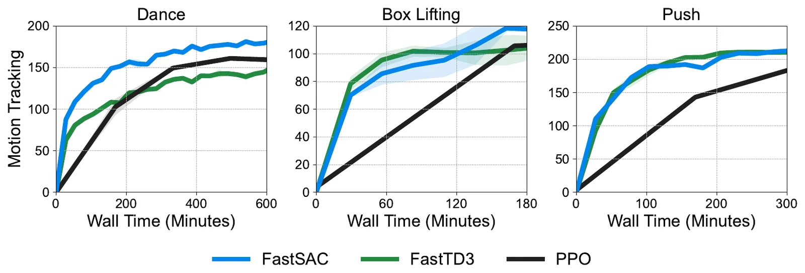
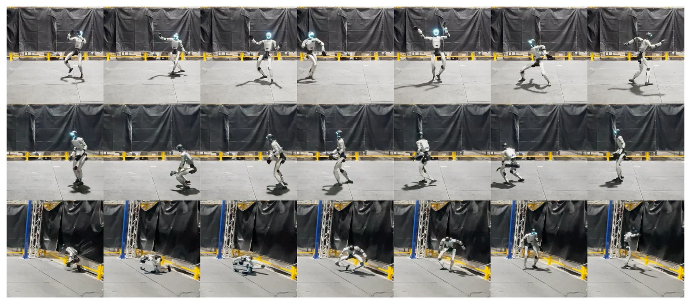

arXiv 2512.01996 · cs.RO · v1 2025 年 12 月 1 日 · 技术报告 · 中文精读
Learning Sim-to-Real Humanoid Locomotion in 15 Minutes
作者 Younggyo Seo*、Carmelo Sferrazza*、Juyue Chen、Guanya Shi、Rocky Duan、Pieter Abbeel（* 共同一作），来自 Amazon FAR（Frontier AI & Robotics）。
关于这份精读。这篇论文在 arXiv 上以 CC BY 4.0 发布，只有 v1（2025-12-01）。我检查了 PDF 每一页的页脚，只有 arXiv 的侧边编号和页码，没有和 CC BY 矛盾的版权声明。这里按原文顺序覆盖摘要、正文五节和算法 1，小节标题和原文一致，用自己的话整理，不是逐字翻译。原文没有附录。
图 1 到图 6 从 arXiv PDF 裁切，只做了裁切、缩放和格式转换，没有改内容；版权归作者，裁切件按 CC BY 4.0 使用，署名 Seo 等。图下的文字是我写的。原文没有表格，结果全在曲线图里；本页的数字表是我从 PDF 的矢量路径里读出来的（pdftocairo -svg 导出，按网格线标定，在指定时刻线性插值），表头都标了“矢量读数”，误差约 ±0.1 个刻度单位。“读者注”是整理时核算或对照发现的，不属于论文内容，页尾有汇总。
代码。官方代码是 amazon-far/holosoma，Apache-2.0。我读的是当时最新的提交 78aeb23（2026-11-17），只读，没有运行。它比论文晚近一年，期间去掉了 Isaac Gym 后端（PR #231）、修过 C51 投影在 torch.compile 下的错误（PR #261）。我也对照了和论文同一天的首个公开提交 9c238cf（2025-12-01）：FastSAC 的全部超参数、G1 行走的奖励、随机化、课程、命令、观测在两个提交之间逐字相同，变的只有默认仿真器（Isaac Gym → Isaac Sim）和整体任务的环境数等。下文行号都指 78aeb23。代码和论文不一致的地方两边都写。
大规模并行仿真已经把机器人强化学习的训练时间从几天压到几分钟。但人形机器人维度高，再加上上真机必需的强域随机化，训练又回到了几小时。这篇报告给出一套基于离策略（off-policy）算法 FastSAC 和 FastTD3 的简单配方：单张 RTX 4090、15 分钟，端到端训出 Unitree G1 和 Booster T1 两种 29 自由度人形的行走策略，带随机动力学、崎岖地形和推搡，并能直接上真机。同一配方在 4 张 L40s 上也加快了全身动作跟踪（whole-body tracking，WBT）。
读完我认为最值得记住的三点：

和 SuperMimic。两篇都在回答“人形控制训练怎样比 PPO 快”，但走的是两条路：
| 本文（FastSAC / FastTD3） | SuperMimic | |
|---|---|---|
| 怎样拿梯度 | 无模型；评论家估 Q，演员对 Q 做重参数化梯度 | 先学可微世界模型，再穿过它做 BPTT（32 步） |
| 数据怎样复用 | 回放缓存，每条转移平均被采样约 16 次（读者注 8） | 回放缓存训世界模型；策略在想象轨迹里学 |
| 任务 | 行走（速度跟踪）为主；跟踪只做单段动作（Dance、搬箱、推） | 全身跟踪，整个 264.56 小时动作库，一个策略 |
| 算力 | 行走 1 张 4090 × 15 分钟 = 0.25 GPU 小时；单段 Dance 4 张 L40s × 600 分钟 = 40 GPU 小时 | 1 张 H100 × 3 小时（整个动作库） |
| 对 PPO 的提速口径 | 同一任务、同一硬件、同一仿真：达到同一回报的时间之比 | 和 SONIC 比 GPU 小时（不同论文、不同 GPU、数据差 2.3 倍） |
倍数怎样看（先算数）。本文自己的同条件比较，我用矢量读数算：G1 Rough 上 FastSAC 7.9 分钟到线速度跟踪 15，PPO 15 分钟时只有 10.2，没到；T1 Rough 上 FastSAC 4.2 分钟、PPO 11.3 分钟到 15，比值 2.7。全身跟踪 Dance 达到 150：FastSAC 166.5 分钟、PPO 340.7 分钟，比值 2.05。SuperMimic 的“GPU 小时少 1000 倍以上”是跨论文、跨硬件、跨数据量的比较。两种倍数口径不同，不能并排比。至于“40 GPU 小时练一段舞”对“3 GPU 小时练整个库”：任务不同（单段对整个库）、GPU 不同（L40s 对 H100）、评测不同（本文是训练曲线上的跟踪奖励，SuperMimic 是失败数），这个对比也不能当成“SuperMimic 快 13 倍”。两边能对上的只有一个方向性的事实：都比各自的 PPO 基线快，快的原因都是同一条数据被用了很多次（这里靠回放，SuperMimic 靠世界模型）。
和 PPO 基线。holosoma 里的 PPO 不是“随手跑的”：同一套环境、奖励（只有存活奖励 1 对 10、课程起点不同，见读者注 9）、域随机化，网络 [512, 256, 128]，学习率 1e-5，自适应 KL。所以本文的比较是同框架内的公平比较。但要注意，同样的墙钟时间里 PPO 采到的数据反而更多（按 PR #303 的计时约 1.4 倍，读者注 14），离策略赢在每条数据用得更狠，不是采样更快。
和 BeyondMimic。本文的全身跟踪奖励、终止条件都照搬 BeyondMimic，区别是加了更多域随机化和推搡（§3.2）。
同批两篇。RPL（arXiv 2602.03002，RPL: Learning Robust Humanoid Perceptive Locomotion on Challenging Terrains）和 PHP 跑酷（arXiv 2602.15827，Perceptive Humanoid Parkour: Chaining Dynamic Human Skills via Motion Matching）都建在 holosoma 上，可以把本文看成它们共用的训练底座。holosoma 里的感知相关代码（CNN 编码器开关 use_cnn_encoder、深度相机、蒸馏）就是为这类后续工作加的。两页正在写，细节以那两页为准。
为什么要快。仿真到真机（sim-to-real）天生是迭代的：仿真里训好、上真机、发现没建模的动力学或传感误差、改仿真、整条管线重训，循环到可靠为止。所以训练速度直接决定一天能迭代几轮。Isaac Gym、Orbit / Isaac Lab、MuJoCo Playground 这类 GPU 并行仿真把许多基准任务压到了分钟级。
人形为什么还是慢。要稳定迁移就得加大域随机化、随机地形、或者用课程引导低能耗的稳定动作。这些都让探索更难、样本效率更低，人形行走和跟踪的训练又回到几小时。
本文做法。核心是 FastSAC 和 FastTD3（Seo 等 2025），即 SAC 和 TD3 为大规模并行仿真调过的高效版本。前作 FastTD3 已经把离策略策略部署到真人形上，但只控制部分关节。本文说明：选好设计和超参数后，两者能扩到全身所有关节的行走，以及跟踪人类动作的全身控制。另一半是奖励：只保留必要项，便于快速扫超参、隔离影响迁移的因素。最终配方在单张 RTX 4090 上 15 分钟端到端训出带随机动力学、崎岖地形、推搡和“自动动作变化率课程”的行走策略。代码在 holosoma。
以往 sim-to-real 的标准是 PPO（同策略，on-policy），因为它最容易随并行环境扩展。近来的工作（PQL、Raffin 的博客、FastTD3、Shukla 的博客）显示离策略算法也能扩展，而且因为能复用仿真数据，在多个基准上比 PPO 快。本节说明怎样让两者做全身控制，重点是改进 FastSAC：它用最大熵目标从数据里学会怎样探索，而 FastTD3 是确定性策略加固定噪声，在强域随机化下探索更吃力。
用大规模并行仿真扩展离策略强化学习。和前人一样用大量并行环境。环境数的效果在难的全身跟踪上最明显（图 2f）。FastTD3 前作关于扩展的大多数观察在全身控制上也成立，例如批大小加到 8K 一直有好处。每个仿真步多做几次梯度更新通常训练更快；而在非平地这类较难的设置里，仿真本身慢，常常成为瓶颈（图 2b）。这让能复用旧数据的离策略方法更有吸引力。
按矢量读数，图 2b 里 16 次更新在 5 分钟时 6.2，8 次 4.5；到 20 分别用 7.7 和 9.2 分钟；15 分钟时两条都在 24.4–24.5。4 次和 2 次最后只到 21.2 和 17.8。代码 config_values/algo.py:89 的 num_updates=8，首个公开提交也是 8。论文没说图 3 用的是几次。我的推断：8 和 16 的终点一样，16 只是前半段快，作者选了更省的 8；但图 2 的“16 更快”和发布配置之间这一步论文没交代。
按关节限位定动作界。SAC、TD3 这类 Tanh 策略需要合适的动作界；Raffin 观察到动作空间无界时训练常不稳。本文的做法：用 PD 控制器时，每个关节的动作界取“关节限位和默认位置之差”。这样基本不用再调动作界。脚注 1：所有组件都稳定后，作者发现无界动作空间其实也能稳定训练；但仍保留这一设计，以为其他机器人或任务可能有用。如果遇到动作界太紧、机器人出不了足够力矩的失败，建议改用无界。
fast_sac_agent.py:116-153 的 _compute_action_boundaries：先算 \(|q_{\rm lo}-q_0|\) 和 \(|q_{\rm hi}-q_0|\)，取较大的那个，再除以 action_scale=0.25（robot.py:527），作为 Tanh 输出的乘数，零点在默认姿态。所以界是对称的，较近的那一侧可以越过限位。以 G1 左膝为例（robot.py:123/154/350）：下限 −0.087、上限 2.880、默认 0.669，两侧差 0.756 和 2.211，取 2.211，乘数 8.84；PD 目标的范围是 0.669 ± 2.211，即 −1.542 到 2.880，下侧比限位多出 1.455 rad。踝滚转两侧对称（±0.2618），乘数 1.047，正好卡在限位。越界的部分最后靠仿真器的关节限位挡住。按 29 个关节逐个算，14 个的可达范围越过限位，最多的是左右髋横滚：限位 −0.524 到 2.967（右侧镜像）、默认 0，k = 11.87，另一侧越限 2.443 rad。乘数从 1.05（踝横滚）到 13.16（肩俯仰），差 12.6 倍。越过的部分靠仿真器的关节限位挡住。论文“限位和默认之差”的说法没说取哪一侧。第 3 幕把 29 个关节都画出来了。
观测归一化和层归一化。和 FastTD3 一样，观测归一化有帮助。但和 FastTD3 不同，本文发现层归一化（LayerNorm）能稳住高维任务的表现（图 2c），这和 SAC 方面的已有观察一致（RLPD、BRO）。
矢量读数，10 分钟时：观测 + 层归一化 22.9，只有层归一化 21.3，只有观测归一化 20.5，都不用 10.6；15 分钟时 24.5、23.9、24.2、21.9。前三条彼此差不到 2.5，和“都不用”差 10 以上。所以图 2c 支持“至少要有一种归一化”，对“两种都要”的证据较弱。代码两者都开：algo.py:103 obs_normalization=True、:104 use_layer_norm=True；网络里每个线性层后接 LayerNorm 再接 SiLU（fast_sac.py:61-77, 246-255）。
评论家的超参数。对 Q 值取平均比裁剪双 Q 学习（clipped double Q-learning，CDQ，取两个 Q 的最小值）好（图 2a），与 BRO 论文“CDQ 和层归一化一起用有害”的观察一致。折扣因子：简单的速度跟踪用低的 γ = 0.97 更好（图 2d），难的全身跟踪用 γ = 0.99 更好（图 2e）。沿用前人做法，评论家是分布式的 C51；分位数回归的分布式评论家在大批量下太贵。
图 2d 矢量读数：5 分钟时 γ = 0.99 是 9.7，γ = 0.97 只有 4.2；两条约在 8.7 分钟交叉；15 分钟时 0.97 是 24.1，0.99 是 22.5。所以“0.97 更好”说的是终点和 10 分钟以后。图 2e（跟踪）600 分钟时 0.99 是 183.3，0.97 是 167.4。代码：行走 algo.py:84 gamma=0.97；跟踪 wbt/g1/experiment.py:99 gamma=0.99，和正文一致。
FastSAC 的探索超参数。常见的 SAC 实现（CleanRL）把 tanh 前动作的标准差 σ 上限设为 \(e^2\)。本文发现，和较大的温度 α 初值一起用时，探索过度会造成不稳。改为 σ 上限 1.0、α 初值 0.001。自动调温（Haarnoja 等 2018b）始终比固定 α 好。目标熵：行走用 0.0，全身跟踪用 \(-|\mathcal A|/2\)。
fast_sac.py:87-90：先对 log σ 头的输出取 tanh，再线性映射到 [log_std_min, log_std_max] = [−5, 0]（algo.py:100-101），所以 σ ∈ [e⁻⁵, 1] = [0.0067, 1.0]，上限正好是论文的 1.0。目标熵 = −|A| × target_entropy_ratio（fast_sac_agent.py:343）：行走比例 0.0 → 目标熵 0；跟踪比例 0.5（wbt/g1/experiment.py:104）→ −29/2 = −14.5，和论文一致。α 以 log α 参数化，初值 log 0.001（:309）。注意 σ 是 tanh 之前的标准差，乘到关节上还要过 tanh 和读者注 5 的乘数。
FastTD3 的探索超参数。沿用混合噪声：每个环境从 \([\sigma_{\min},\sigma_{\max}]\) 里随机抽一个高斯噪声标准差。低值最好，\((\sigma_{\min},\sigma_{\max})=(0.01,0.05)\)。
优化超参数。Adam，学习率 0.0003。FastTD3 用的权重衰减 0.1 对高维控制正则太强，改用 0.001。仿照 SigLIP 在大批量下用低 β₂ 稳训练的做法，β₂ = 0.95 比 0.99 略稳。
代码：algo.py:79-81 三个学习率 3e-4；:109 weight_decay=0.001；优化器是 AdamW，betas=(0.9, 0.95)（fast_sac_agent.py:328-344，α 的优化器也一样）。论文写的是 Adam，代码是解耦权重衰减的 AdamW，这在“权重衰减 0.001”的含义上有差别（AdamW 的衰减不经过自适应缩放）。
关于更多技巧。近年改进离策略 RL 的工作（打破回放比限制、BBF、BRO、SimBa、超球归一化、MaxInfoRL、单纯形嵌入等）大概都能进一步提高 FastSAC / FastTD3。本文刻意保持配方简单，留给社区在此基础上推进。

| 子图 | 曲线 | 5 min | 10 min | 15 min | 首次 ≥ 20 的时刻 |
|---|---|---|---|---|---|
| (a) | 不用 CDQ | 4.1 | 23.1 | 24.3 | 9.3 min |
| (a) | CDQ | 3.7 | 14.2 | 20.4 | 14.3 min |
| (b) | 16 次更新 | 6.2 | 23.1 | 24.4 | 7.7 min |
| (b) | 8 次 | 4.5 | 23.3 | 24.5 | 9.2 min |
| (b) | 4 次 | 2.9 | 15.3 | 21.2 | 11.4 min |
| (b) | 2 次 | 2.6 | 11.0 | 17.8 | 15 分钟内未到 |
| (c) | 观测 + 层归一化 | 4.5 | 22.9 | 24.5 | 8.9 min |
| (c) | 只有观测归一化 | 4.9 | 20.5 | 24.2 | 9.9 min |
| (c) | 只有层归一化 | 3.9 | 21.3 | 23.9 | 9.7 min |
| (c) | 都不用 | 2.8 | 10.6 | 21.9 | 11.7 min |
| (d) | γ = 0.97 | 4.2 | 22.8 | 24.1 | 9.2 min |
| (d) | γ = 0.99 | 9.7 | 19.4 | 22.5 | 11.2 min |
| 子图 | 曲线 | 100 min | 300 min | 600 min | 首次 ≥ 150 的时刻 |
|---|---|---|---|---|---|
| (e) | γ = 0.99 | 135.0 | 168.0 | 183.3 | 155 min |
| (e) | γ = 0.97 | 129.6 | 154.1 | 167.4 | 252 min |
| (f) | 32768 环境 | 135.6 | 177.6 | 192.3 | 137 min |
| (f) | 16384 | 130.5 | 162.7 | 183.3 | 168 min |
| (f) | 8192 | 117.2 | 145.6 | 159.6 | 340 min |
| (f) | 4096 | 101.2 | 124.9 | 141.7 | 600 min 内未到 |
图 2f 里 32768 个环境在 600 分钟时 192.3，16384 是 183.3。图 1 和图 5 的跟踪实验写的是 16384（图 1 图注）。代码里整体跟踪的预设 wbt/g1/experiment.py:89 是 num_envs=4096，首个公开提交是 8192；行走用默认 4096（config_types/experiment.py:73）。也就是说，按 README 直接跑跟踪，得到的是图 2f 最下面那条曲线的条件（单卡还要再看显存）。要对齐论文，用 README 的多卡命令 torchrun --nproc_per_node=4 … --training.num-envs 16384（README 说这是全局环境数）。
原文没有给公式编号，下面按算法 1 的行号标。符号：演员 \(\pi_\theta\)，两个评论家 \(Q_{\phi_1},Q_{\phi_2}\)，目标评论家 \(Q_{\phi_i^{\rm target}}\)，温度 \(\alpha\)，回放缓存 \(\mathcal B\)，小批量 \(B\)。
每个环境步：
目标值用两个目标 Q 的平均（第 10 行）：
评论家回归到 \(y\)（第 12 行）：
演员用重参数化技巧，对两个 Q 的平均做梯度上升（第 14 行）：
温度（第 16 行）和目标网络（第 17 行）：
论文没给 \(\rho\)。代码 tau=0.125（algo.py:85），按 target ← (1−τ)·target + τ·φ 更新（fast_sac_agent.py:809-810），即 \(\rho=0.875\)，每次评论家更新后都做一次。跟踪任务 τ = 0.05。
分布式评论家（C51）是本页补的写法，论文省略了：每个 Q 网络输出 101 个原子上的概率 \(p_j\)，支撑点 \(z_j\) 在 \([-20,20]\) 上均匀（algo.py:91-93），\(Q=\sum_j p_j z_j\)。目标分布是把 \(r+\gamma\,{\rm bootstrap}\,z_j\) 投影回支撑点（fast_sac.py:266-314），损失是交叉熵：
其中 \(b=1\) 表示可自举（未终止或因超时截断），\(\Phi\) 是 C51 的线性投影。熵项被折进了“奖励”里（fast_sac_agent.py:442）。
算法 1 第 10 行把两个目标 Q 平均成一个 \(y\)，两个评论家回归到同一个值。代码 Critic.projection（fast_sac.py:382-404）对两个目标网络分别投影，得到形状 [2, B, 101] 的两个目标分布；损失 -(target_distributions * log_softmax(q_outputs)).sum(-1)（fast_sac_agent.py:450-453）逐元素相乘，所以评论家 1 学目标网络 1 的分布，评论家 2 学目标网络 2 的分布，没有在目标上取平均，也没有取最小。“平均”只出现在演员一侧：q_values.mean(dim=0)（:519），和第 14 行一致。两种写法都避开了 CDQ 的取最小。区别是：论文写法里两个评论家的目标相同，误差会互相拉近；代码里两个评论家各自独立自举，更像两个独立的 C51 集成。这对结果影响多大，我没有运行，不知道。第 5 幕可以切换三种写法看玩具数字。
算法 1 每次内循环（第 7–18 行）都更新评论家、演员和温度。代码（fast_sac_agent.py:784-787）：num_updates > 1 时，只在 i % policy_frequency == 1 时更新演员；行走 num_updates=8、policy_frequency=4，于是 i = 1、5 两次。温度在每次评论家更新里都更新，用的是下一状态的 log π（:475），不是算法 1 写的当前状态 \(\mathcal H(o)\)。跟踪任务 num_updates=4、policy_frequency=2，i = 1、3 两次。这是 TD3 式的“延迟策略更新”，论文正文和伪代码都没写。
batch_size=8192 是全局批大小，代码先除以环境数（fast_sac_agent.py:767）：4096 个环境时每个环境每次更新采 2 条。8 次更新一次性采 16 × 4096 = 65,536 条（:546-560，fast_sac_utils.py:82-90，每个环境在自己的环形缓存里均匀抽）。开了对称增广（行走 use_symmetry=True）后，每条再加一条左右镜像，每次更新实际是 16,384 条（samples_per_update *= 2，:562-563）。每个仿真步新进 4096 条，取出 65,536 条原始转移，平均每条转移被采样 65,536 / 4096 = 16 次（不算镜像）。缓存 buffer_size=1024 是每个环境 1024 步，总计 4096 × 1024 = 4,194,304 条，1024 步 × 0.02 s = 20.5 秒，差不多正好一个 20 秒回合。也就是说缓存只装最近约一个回合的数据，旧数据很快被覆盖。
自己画的 · 11 幕 3D 框架动画
总览、并行环境和回放缓存、演员和关节限位动作界（29 个关节的真实乘数）、C51 评论家、目标值的三种写法、一次迭代里的更新顺序、探索（σ 上限和 FastTD3 的混合噪声）、奖励和惩罚课程、域随机化和地形、训练时间对账（图 3 矢量读数）、sim2sim / sim2real 部署。可以暂停、拖进度、旋转画面、切换开关。玩具数字是当场算的，都标了“玩具”。


人形行走和全身控制的奖励传统上要大量塑形，常常 20 项以上（Orbit、HumanoidVerse）：运动学量的跟踪、细致的姿态正则、关节构型惩罚、落脚约束、规定“该怎么走”的塑形项。这让调参困难，优化也脆弱。受 MuJoCo Playground 和 BeyondMimic 的启发，本文用少得多的目标（少于 10 项）：只在必要时才加一项，并让不同算法、不同机器人的奖励几乎相同。目标不是强加某种风格，而是给出足够稳健的结构，同时保留行为的丰富性。项少也便于快速扫参。
行走（速度跟踪）。只覆盖能稳定迁移的必要部分：
躯干或其他非脚部位触地就终止回合。另外用对称增广（Mittal 等 2024）鼓励对称步态，作者发现这也让收敛更快。以上惩罚都受一个课程控制：随着回合变长逐渐加大权重（HumanoidVerse 的做法），大大简化了探索。作者发现这些项就足以在崎岖地形、随机动力学、外部扰动下得到稳健行走，并且对 G1 和 T1、对 FastSAC / FastTD3 / PPO 都适用。
| 论文的说法 | 代码项 | 权重（FastSAC） | 公式（managers/reward/terms/locomotion.py） | 课程 |
|---|---|---|---|---|
| 速度跟踪 | tracking_lin_vel | 2.0 | \(\exp(-\|v^{\rm cmd}_{xy}-v_{xy}\|^2/0.25)\) | 否 |
| tracking_ang_vel | 1.5 | \(\exp(-(\omega^{\rm cmd}_z-\omega_z)^2/0.25)\) | 否 | |
| 抬脚高度 | feet_phase | 5.0 | 两脚高度与按相位算的期望高度之差，\(\exp(-\text{误差}^2/0.008)\)，摆动高度 0.09 m | 否 |
| 默认姿态 | pose | −0.5 | \(\sum_j w_j(q_j-q^0_j)^2\)，腿 0.01–5，腰和手臂 50 | 是 |
| 脚部 | penalty_close_feet_xy | −10 | 两脚横向距离 < 0.15 m 时为 1 | 是 |
| penalty_feet_ori | −5 | 每只脚坐标系里重力的 xy 分量模长之和 | 是 | |
| 存活 | alive | 10（PPO 是 1） | 1 | 否 |
| 躯干竖直 | penalty_orientation | −10 | 投影重力 xy 分量平方和 | 是 |
| penalty_ang_vel_xy | −1 | 基座横滚、俯仰角速度平方和 | 是 | |
| 动作变化率 | penalty_action_rate | −2 | \(\|a_t-a_{t-1}\|^2\) | 是 |
上表数下来是 10 项，T1 的 10 项和权重与 G1 完全相同（loco/t1/reward.py，只是顺序不同）。论文说“少于 10 项”，差一项，可能是把两个速度跟踪算作一项。FastSAC 和 PPO 的奖励只差存活奖励：FastSAC 10，PPO 1（reward.py:91-95 对 :185-189）。课程也不同（读者注 10）。所以论文“不同算法的奖励几乎相同”成立，但这一处差 10 倍，论文没提。
代码 PenaltyCurriculum（managers/curriculum/terms/locomotion.py:182-191）：每次更新时看最近的平均回合长度，低于 150 步就把惩罚比例乘以 \(1-d\)，高于 750 步就乘以 \(1+d\)，再夹到 [min, max]。FastSAC 的预设（loco/g1/curriculum.py:32-57）是起点 0.5、下限 0.5、上限 1.0、\(d=0.001\)；PPO 是起点 0.1、下限 0、\(d=0.00025\)。所以 FastSAC 的惩罚从一开始就至少是半权重。从 0.5 涨到 1.0 需要 \(\ln 2/\ln 1.001\approx 693\) 次“回合够长”的更新。论文引言说的“自动动作变化率课程”就是这个，但它作用在全部 7 个带 penalty_curriculum 标签的项上，不只动作变化率。另外，2026-11-03 合入的 PR #279 之前，这个比例不进检查点，断点续训会从起点重新爬；用旧版本复现时要注意。
全身跟踪。奖励沿用 BeyondMimic 的结构，它本来就符合同样的极简原则：围绕跟踪目标，加少量正则，加 DeepMimic 式的终止条件。另外发现以速度推搡形式加入外部扰动能让真机更稳。

设置。最大化 §2.2 的奖励和。训练中每 10 秒随机采一次目标速度命令；以 20% 的概率把命令置零，让机器人学会站着而不是一直原地踏步。除非特别说明，都在平地和崎岖地形的混合上训练，这能让真机行走更稳。域随机化：推搡、动作延迟、PD 增益随机化、质量随机化、摩擦随机化、质心随机化（只对 G1）。学习曲线报告的都是线速度跟踪奖励。
| 项 | G1 | T1 | 位置 |
|---|---|---|---|
| 推搡 | 每 5–10 s 一次，最大速度 1.0 m/s（xy） | randomization.py:7-14 | |
| 动作延迟 | 0–1 个控制步（0–20 ms） | :15-21 | |
| PD 增益 | Kp、Kd 各 ×U(0.9, 1.1) | :36-45 | |
| 质量 | 各连杆 ×U(0.9, 1.2)；基座加 U(−1, 3) kg | :46-54 | |
| 摩擦 | U(0.5, 1.25) | U(0.1, 1.0) | :55-61 |
| 质心 | 基座 xyz 各 ±0.05 m | 关闭（范围 ±0.01） | :62-68 |
| 初始关节 | 默认姿态 ×U(0.5, 1.5) | :83-91 | |
| 关节零偏、力矩 RFI | 有代码，默认关闭 | :22-35 | |
| 地形 | 平地 20%、崎岖 60%、低矮障碍 20%，10 × 20 块 8 m × 8 m | terrain.py:31-58 | |
| 命令 | vx、vy、ωz 各 U(−1, 1)；每 10 s 重采；20% 置零 | loco/g1/command.py:5-40 | |
| 步态相位 | 周期 1.0 s ± 0.2 | 代码里没写参数，用默认 | command.py:9-15 |
| 观测噪声（演员） | 关节位置 ±0.01，关节速度 ±0.1，其余 0 | loco/g1/observation.py | |
代码 loco/g1/observation.py:5-117：演员看角速度 3、投影重力 3、速度命令 2 + 1、关节位置 29、关节速度 29、上一步动作 29、步态相位 sin / cos 各 1，共 98 维，只看当前一帧（history_length=1）。评论家多一个基座线速度 3 维（×2 缩放），共 101 维，不加噪声，这是非对称的演员-评论家。演员看不到线速度，靠相位和本体感觉。仿真 200 Hz、每 4 步控制一次（simulator.py:20-21），所以策略 50 Hz，20 秒回合 1000 步，和图 4 回合长度的上限 1000 一致。
行走预设的推搡是 5–10 秒一次（randomization.py:10），正是图 3 图注说的“非强推”。图 3 后两列的 Push-Strong（1–3 秒一次）在代码里没有单独的预设，要自己覆盖 push_interval_s，例如 --randomization.setup-terms.push-randomizer-state.params.push-interval-s=[1,3]（键名按 README 里同组参数的写法推的，我没有运行验证）。强推的最大速度论文也没说，代码只有 1.0 m/s 这一档。全身跟踪的预设本来就是 1–3 秒一次（wbt/g1/randomization.py:72）。Plane 设置用 terrain:terrain-locomotion-plane（README 有示例）。
结果。图 3 显示 FastSAC 和 FastTD3 在 15 分钟内把 G1 和 T1 训到能跟踪速度命令，墙钟时间上明显好于 PPO。这是在强域随机化下做到的：在崎岖地形上站立和行走，持续推搡、动作延迟、质心随机等。尤其在强推（每 1–3 秒推一次）这类强随机化下两者仍训练得快，而 PPO 很吃力。FastSAC 在几种行走设置里略好于 FastTD3，作者猜是最大熵带来的高效探索。
| 机器人 · 设置 | FastSAC | FastTD3 | PPO | FastSAC 首次 ≥ 15 | PPO 首次 ≥ 15 |
|---|---|---|---|---|---|
| G1 · 平地 | 4.7 / 23.3 / 25.9 | 5.0 / 20.3 / 25.0 | 4.0 / 7.2 / 10.6 | 8.5 min | 未到 |
| G1 · 崎岖 | 4.4 / 22.8 / 24.4 | 3.4 / 19.6 / 23.3 | 2.5 / 6.7 / 10.2 | 7.9 min | 未到 |
| G1 · 平地 + 强推 | 2.2 / 19.7 / 20.2 | 2.1 / 17.0 / 19.9 | 1.7 / 3.4 / 13.8 | 9.1 min | 未到 |
| G1 · 崎岖 + 强推 | 1.9 / 17.5 / 18.4 | 1.9 / 16.1 / 17.7 | 1.4 / 3.1 / 12.8 | 9.4 min | 未到 |
| T1 · 平地 | 20.9 / 25.2 / 27.0 | 19.6 / 25.4 / 26.8 | 6.8 / 15.2 / 17.5 | 3.7 min | 9.8 min |
| T1 · 崎岖 | 20.2 / 23.2 / 25.0 | 17.2 / 22.3 / 23.4 | 7.3 / 14.0 / 17.6 | 4.2 min | 11.3 min |
| T1 · 平地 + 强推 | 17.3 / 20.4 / 21.6 | 14.6 / 19.4 / 20.2 | 8.7 / 15.9 / 18.1 | 4.4 min | 8.4 min |
| T1 · 崎岖 + 强推 | 14.7 / 18.4 / 19.4 | 11.2 / 17.3 / 17.8 | 5.2 / 15.3 / 18.5 | 5.2 min | 9.7 min |
上表 15 分钟时，G1 两个强推设置里 PPO 是 13.8 和 12.8，FastSAC 20.2 和 18.4，PPO 前 10 分钟只有 3 左右，确实没学起来。但 T1 崎岖 + 强推里 PPO 15 分钟是 18.5，FastSAC 19.4、FastTD3 17.8，PPO 已经超过 FastTD3、接近 FastSAC；T1 平地 + 强推 PPO 18.1 对 FastSAC 21.6。所以在 T1 上，强推主要是让离策略方法“早到”（4–5 分钟对 8–10 分钟），终点差距不大。“FastSAC 略好于 FastTD3”在 8 格里 15 分钟时都成立（差 0.2 到 1.6），但 G1 平地 5 分钟时 FastTD3 略高。
论文没说“Lin. Velocity Tracking”的单位。代码记录的 Episode/rew_tracking_lin_vel 是回合累计（权重 2 × exp(·) × dt）再除以回合时长 20 秒（managers/reward/manager.py:231），上限 2 × 0.02 × 1000 / 20 = 2；仓库夜间测试的门槛也是 0.95（loco/g1/experiment.py:54）。图里的值到 27。若是不除时长的加权回合和，上限 2 × 0.02 × 1000 = 40，量级对得上，但这只是我的推断，未核实。全身跟踪纵轴（到 200）同样没定义。所以复现时不要拿 wandb 上的数直接和图比绝对值，比形状和相对次序。
矢量读数：图 1 的 G1 曲线在 5 / 10 / 15 分钟是 4.4 / 22.8 / 24.4（FastSAC）、3.4 / 19.7 / 23.3（FastTD3）、2.5 / 6.7 / 10.2（PPO），和图 3 的“G1 崎岖”逐项相同；T1 曲线和“T1 崎岖”相同；全身跟踪那格和图 5 的 Dance 相同（600 分钟 180.3 / 146.6 / 159.5）。图 4 的“FastSAC (Ours)” G1 曲线也是同一条。图 2(a)(c)(d) 里代表默认配置的蓝线和它接近但不完全相同（15 分钟 24.1–24.5），应是另外跑的。
FastSAC 相对旧配置的提升。图 4 对比本文配方和 FastTD3 论文里旧配置的 FastSAC。层归一化、去掉 CDQ、仔细调探索和优化超参数，对提升都很重要（细节见 §2）。
图 4 矢量读数（G1）：回合长度在 2.5 分钟时旧配置 183、新配置 90；5 分钟时 966 对 721；旧配置约 4.3 分钟到 900 步，新配置约 5.9 分钟。跟踪奖励 15 分钟时新 24.4、旧 19.8；T1 新 23.9、旧 18.0，回合长度两者都在约 4 分钟到 900 步。也就是说，旧配置并没有“摔得更多”，差在站住以后学不好跟踪。论文没写旧配置的具体参数（只说是 FastTD3 论文的设置），也没写每条曲线跑了几个种子、阴影是什么（标准差还是最值）。
设置。大体沿用 BeyondMimic。最大化 §2.2 的奖励和，学习曲线报告跟踪奖励之和。每个回合随机采一段动作片段。和尽量少用域随机化的 BeyondMimic 不同，本文发现多种域随机化能让部署时更稳：摩擦、质心、关节位置零偏、身体质量、PD 增益，再加推搡。
代码对应 wbt/g1/randomization.py：摩擦静 U(0.3, 1.6) / 动 U(0.3, 1.2)，质心 x ±0.025、yz ±0.05，关节零偏 ±0.01，Kp ×U(0.9, 1.1)，推搡每 1–3 秒，6 维速度上限 (0.5, 0.5, 0.2, 0.52, 0.52, 0.78)。FastSAC 跟踪预设（wbt/g1/experiment.py:85-108）：γ 0.99、每步 4 次更新、演员每 2 次更新 1 次、501 个原子、τ 0.05、目标熵比例 0.5、不用对称、回合 10 秒、40 万次迭代。
结果。图 5 显示两者在跟踪人类动作上也能快速训练，和 PPO 相当或更好。FastSAC 在 Dance 上好于 FastTD3，Dance 比其他任务长得多；作者猜最大熵带来的探索在更难的任务上让学习更快。两者在更多类型任务上的差别留作以后研究。
| 任务 | 时刻 | FastSAC | FastTD3 | PPO |
|---|---|---|---|---|
| Dance | 60 min | 112.0 | 82.7 | 36.4 |
| 180 min | 151.4 | 107.7 | 105.9 | |
| 300 min | 165.7 | 129.3 | 140.1 | |
| 600 min | 180.3 | 146.6 | 159.5 | |
| Box Lifting | 30 min | 70.5 | 78.8 | 21.8 |
| 60 min | 86.5 | 96.4 | 39.8 | |
| 180 min | 117.8 | 104.0 | 106.1 | |
| Push | 50 min | 137.7 | 143.6 | 44.5 |
| 100 min | 186.7 | 181.7 | 85.7 | |
| 300 min | 212.7 | 210.6 | 183.2 |
上表 Dance 600 分钟时 FastTD3 146.6、PPO 159.5，FastTD3 从约 230 分钟起就在 PPO 下面（300 分钟 129.3 对 140.1）。搬箱 180 分钟时 FastTD3 104.0、PPO 106.1，也略低。所以“FastSAC 和 FastTD3 都与 PPO 相当或更好”对 FastTD3 只在前半段成立，论文的结论更该读成“FastSAC 相当或更好”。另外 PPO 在 Box Lifting 和 Push 两格只有 4 个路径点（Dance 5 个），中间是直线，PPO 的中途数值是插值，不是测量；FastSAC / FastTD3 有 8 到 25 个点。PPO 的路径点在 180 / 300 分钟之后还延伸（裁在图框外），我只读框内部分。

仿真到真机。图 6 展示 FastSAC 跟踪策略在真 G1 上的部署。能完成几段动作，包括持续 2 分钟以上的长 Dance。作者据此说 FastSAC 不仅在仿真里训得快，也学到了能部署的稳健全身控制。原文没有真机的定量指标（成功率、跟踪误差），只有照片和视频。
大规模并行仿真里的强化学习。早期靠 CPU 多进程并行（DPPO、OpenAI 魔方、IMPALA 等），策略学习常用多卡，但吞吐受进程管理和仿真速度限制。GPU 并行环境（Liang 等 2018、Isaac Gym、Orbit、Genesis、MuJoCo Playground）把吞吐扩到上千环境，这推动了一系列能力很强的控制器（分钟级行走、视觉跑酷、人形跑酷、ASAP、HOVER 等）。本文在此基础上，把并行仿真和为大规模训练调过的离策略算法结合，加速 sim-to-real 迭代。
sim-to-real 的算法。PPO 是事实标准，常常是各框架（Isaac Gym、Orbit、Playground、RSL-RL）唯一支持的算法，主要因为同策略方法容易随并行环境扩展。近来的工作开始证明离策略方法也能扩展（PQL、Raffin、Shukla、FastTD3）。FastTD3 首次把离策略训练的人形策略部署到真机，但只控部分关节。本文推进到全身所有关节的行走和跟踪人类动作，同时把之前不稳的 FastSAC 调稳。
把可扩展的离策略算法 FastSAC、FastTD3 和精简的训练管线结合，本文缩小了高吞吐并行仿真的潜力和人形 sim-to-real 的实际需求之间的差距，说明离策略算法能有效扩展，缩短全身人形控制器的迭代时间。设计刻意保持简单，便于他人在此基础上改进；作者预计把离策略 RL 和人形学习的新进展加进来还能更好。代码已开源（holosoma）。
引言和结论都说“本配方的代码在 holosoma”。但 holosoma 的 README、训练指南、算法注册表（config_values/algo.py:18-21）都只有 PPO 和 FastSAC（以及后来加的蒸馏）。我在克隆里查了全部历史：git log --all -S fast_td3 和 -S FastTD3 只命中首个公开提交，而那里的“FastTD3”只出现在 THIRD_PARTY_LICENSES、FastSAC 的文档字符串和推理辅助代码的注释里，没有任何 FastTD3 的智能体代码。FastTD3 的实现在作者的另一个仓库 younggyoseo/FastTD3；那个仓库是否带本文的 G1 / T1 全关节配置，我没有核实。图 3、图 5 里的绿色曲线因此无法直接用 holosoma 复现。
全文没有出现 Isaac Gym、Isaac Sim 或 MuJoCo 作为实验平台的说明。和论文同一天的首个公开提交里，G1 / T1 行走预设的默认仿真器是 simulator.isaacgym，README 的第一个例子也是“G1 with FastSAC on IsaacGym”；全身跟踪“只支持 G1 / IsaacSim”。所以我推断行走曲线来自 Isaac Gym、跟踪曲线来自 Isaac Sim，这是推断，未核实。Isaac Gym 后端已在 PR #231（2026-10-21）删除，要用它得切到 holosoma-v0.0.3 标签。不同仿真器的速度差很多（读者注 14），复现 15 分钟时这是第一个变量。
论文写到的每个设计，在 holosoma 78aeb23 里的位置。路径省略前缀 src/holosoma/holosoma/。“一致”指数值或做法相同。
| 论文 | 代码（文件:行 · 键） | 值 | 对照 |
|---|---|---|---|
| 大量并行环境 | config_types/experiment.py:73 · training.num_envs | 4096 | 论文行走没写环境数；跟踪写 16384，预设 4096（读者注 17） |
| 批大小 8K | config_values/algo.py:86 · batch_size | 8192（全局） | 一致；开对称后每次 16384（读者注 8） |
| 每步多次更新 | algo.py:89 · num_updates | 8（跟踪 4） | 图 2b 最快的是 16（读者注 7） |
| 回放缓存 | algo.py:82 · buffer_size；agents/fast_sac/fast_sac_utils.py:16 | 每环境 1024 步 | 论文没写 |
| 按关节限位定动作界 | agents/fast_sac/fast_sac_agent.py:116-153；algo.py:99 · use_tanh | max(两侧差)/0.25 | 取较大一侧（读者注 5） |
| 观测归一化 + 层归一化 | algo.py:103-104；fast_sac.py:61-77, 246-255 | 都开；LN 在每个隐藏层后 | 一致 |
| Q 取平均，不用 CDQ | fast_sac_agent.py:436-453, 519；algo.py:105 · num_q_networks | 2 个 Q | 演员一侧一致；目标一侧各用各的（读者注 3） |
| γ 0.97 / 0.99 | algo.py:84；wbt/g1/experiment.py:99 | 0.97 / 0.99 | 一致 |
| C51 分布式评论家 | algo.py:91-93；fast_sac.py:232-314 | 101 原子，[−20, 20]（跟踪 501） | 论文没给原子数和范围 |
| σ 上限 1.0 | algo.py:100-101 · log_std_max/min；fast_sac.py:87-90 | log σ ∈ [−5, 0] | 一致（读者注 6b） |
| α 初值 0.001，自动调温 | algo.py:97-98；fast_sac_agent.py:309, 475 | 0.001，开 | 一致；温度用下一状态的 log π |
| 目标熵 0 / −|A|/2 | algo.py:90；wbt/g1/experiment.py:104；fast_sac_agent.py:343 | 比例 0 / 0.5 | 一致 |
| FastTD3 噪声 (0.01, 0.05) | — | — | holosoma 没有 FastTD3（读者注 19） |
| Adam，lr 3e-4 | algo.py:79-81；fast_sac_agent.py:328-344 | AdamW，3e-4 | 优化器是 AdamW |
| 权重衰减 0.001 | algo.py:109 · weight_decay | 0.001 | 一致 |
| β₂ = 0.95 | fast_sac_agent.py:333, 340, 344 · betas | (0.9, 0.95)，写死 | 一致；不是配置键 |
| 目标网络 ρ | algo.py:85 · tau；fast_sac_agent.py:809-810 | τ 0.125（ρ = 0.875） | 论文没给 |
| 演员更新频率 | algo.py:88 · policy_frequency；fast_sac_agent.py:784-787 | 8 次里 2 次 | 算法 1 是每次（读者注 4） |
| 网络大小 | algo.py:94-95；fast_sac.py:61-77, 246-255 | 演员 512→256→128；评论家 768→384→192→101 | 论文没写 |
| 其他 | algo.py:102, 106-108 | torch.compile，bf16 混合精度，不裁梯度 | 论文没写 |
| 行走奖励 < 10 项 | config_values/loco/g1/reward.py:99-191 | 10 项 | 读者注 9 |
| 惩罚课程 | loco/g1/curriculum.py:32-57；managers/curriculum/terms/locomotion.py:182-191 | 0.5→1.0，750 步阈值 | 读者注 10 |
| 对称增广 | loco/g1/experiment.py:41 · use_symmetry；fast_sac_agent.py:562-604 | 开 | 一致 |
| 躯干等触地终止 | loco/g1/termination.py · contact_forces_exceeded | 力 > 1 N | 一致 |
| 域随机化（6 项） | loco/g1/randomization.py | 见 §3.1 的表 | 一致；质心只 G1 开 |
| 命令 10 s 重采，20% 站立 | loco/g1/command.py:7, 26 | 10.0，0.2 | 一致 |
| 平地 + 崎岖混合 | config_values/terrain.py:31-58 | 20 / 60 / 20（含低矮障碍） | 论文没提障碍 |
以下按 holosoma 的 README、src/holosoma/README.md、src/holosoma_inference/docs/workflows/ 和 GitHub issues 整理，提交 78aeb23。我没有运行任何命令。
# 行走，G1，FastSAC，Isaac Sim（README 的第一个例子） source scripts/source_isaacsim_setup.sh python src/holosoma/holosoma/train_agent.py exp:g1-29dof-fast-sac simulator:isaacsim logger:wandb --training.seed 1 # T1 换成 exp:t1-29dof-fast-sac；PPO 基线去掉 -fast-sac # 平地：追加 terrain:terrain-locomotion-plane # 全身跟踪，论文的 4 卡 16384 环境 torchrun --nproc_per_node=4 src/holosoma/holosoma/train_agent.py exp:g1-29dof-wbt-fast-sac --training.num-envs 16384
注意 tyro 要求 exp: 写在最前。无显示器的服务器上 logger:wandb 默认录视频会报 GLXBadFBConfig（issue #5）：Isaac Sim 加 --logger.video.enabled False，MuJoCo 设 MUJOCO_GL=egl。
| 来源 | 条件 | 数字 |
|---|---|---|
| 论文 | 行走，单张 RTX 4090 | 15 分钟（取曲线末端检查点） |
| 论文 | 全身跟踪，4 张 L40s，16384 环境 | Dance 600 分钟，搬箱 180，推 300 |
| 代码预设 | 行走迭代数 | G1 50000，T1 100000（loco/*/experiment.py:41）；跟踪 400000 |
| PR #303 的计时 | 单张 RTX 5090，4096 环境，G1 FastSAC | Isaac Sim 9.14 s / 100 次迭代，MJWarp 5.55 s / 100 次（合并前的 main） |
| 我的估算 | 按上一行 | 15 分钟 ≈ Isaac Sim 9800 次 / MJWarp 16200 次迭代；跑满 50000 次约 76 / 46 分钟 |
仓库里一个未合入的性能 PR #303 在单张 RTX 5090 上测：G1 FastSAC Isaac Sim 每 100 次迭代 9.14 秒（采集 4.98、学习 4.16），即每次迭代 0.0914 秒。900 秒 / 0.0914 ≈ 9850 次迭代 ≈ 9850 × 4096 ≈ 4030 万条转移，按 50 Hz 合约 22.4 万秒、约 224 小时的机器人经验；评论家更新约 7.9 万次、演员约 2.0 万次。跑满预设 50000 次要约 4570 秒 ≈ 76 分钟。MJWarp 每次 0.0555 秒，15 分钟约 16,200 次。同一 PR 里 G1 PPO Isaac Sim 每次迭代 1.53 秒、每个环境 24 步，摊到每个环境步 0.064 秒，比 FastSAC 的 0.091 秒快约 1.4 倍：同样的墙钟时间里 PPO 拿到的数据更多。以上都是我按 PR 里的数推的，硬件（5090 对 4090）、仿真器（论文推测是 Isaac Gym）和代码版本都和论文不同，未核实。复现时建议按墙钟时间看曲线，不要以为跑完 50000 次才算“15 分钟版”。
| 编号 | 问题 | 状态 |
|---|---|---|
| #5 | 无头服务器上 wandb 录视频报 GLXBadFBConfig；关视频或用 EGL | 已关闭，README 已写 |
| #16 | setup_isaacsim.sh 用 --index-url 指向 NVIDIA 源，装不上 toml；改 --extra-index-url | 已关闭，维护者同意改 |
| #21 | MJWarp 训练行走段错误；维护者用 Torch 2.9.1 + CUDA 12.8 复现不出，提问者用的是 Torch 2.7.0 | 开着 |
| #10 | 有人把 FastSAC 单独移植到 rsl_rl / Isaac Lab，ANYmal 上效果明显差，另一人移植后不收敛；问 C51 是否关键。维护者没有技术回答 | 已关闭 |
| #31 | 用户报告在匹配所有参数后，Isaac 训练的策略上真机比 MJWarp 好；列出摩擦建模、网格碰撞等差异 | 开着，无官方回复 |
| #25 | 自制机器人训练中途 critic 损失变 inf，报 normal expects std >= 0（日志是 PPO） | 开着 |
| PR #261 | C51 投影在冷编译缓存下被 Inductor 融合出错，目标值膨胀、评论家发散；把散射移出 torch.compile。此前 PR #255 的临时办法是多卡时不编译 _update_main | 2026-10-22 合入 |
| PR #279 | 惩罚课程比例不进检查点，续训从 0.1 重新爬（他们观察到约 380 次迭代才回到 1.0）；多卡各卡比例漂移 | 2026-11-03 合入 |
| README | T1 在 MJWarp 上目前训不出来：PPO 中止，FastSAC 比 G1 慢约 25 倍；PPO 在混合地形要 --terrain.terrain-term.scale-factor=0.5 | 文档说明 |
| #47 | G1 踝关节力矩 / 速度限位在 URDF 和配置里不一致（35 对 50 N·m）；有用户指出现在 URDF 已改为 50 / 37 | 开着 |
| #112 | T1 真机站立时前后周期性晃动，问训练侧怎么缓解 | 开着，无回复 |
| #44 | 每次训练生成两个时间戳不同的实验目录（一个只有空的视频目录） | 开着 |
| #9 | T1 MuJoCo 桥接导入 B1LowCmdSubscriber 失败；重装 pip install -e src/holosoma[booster] | 已关闭 |
以下各条都是本页加的核算或对照，不属于论文内容。点编号跳到对应位置。
论文没写、我也没找到的：FastTD3 的完整超参数；跟踪任务每段动作的长度和来源；真机的定量结果；图中每条曲线的运行次数。
文中提到的机器人、仿真器、数据集和方法。2026 年 11 月 20 日用脚本核对，全部返回 200。
| 名称 | 是什么 | 主页 | 论文 |
|---|---|---|---|
| FastSAC Humanoid | 本文项目页（只链接，没有抓取内容） | holosoma | 2512.01996 |
| FastTD3 | 作者前作 | 代码 | 2505.22642 |
| Unitree G1 | 人形机器人，29 自由度 | unitree.com/g1 | – |
| Booster T1 | 人形机器人，29 自由度版本 | booster.tech | – |
| Isaac Gym | GPU 仿真器（holosoma 已移除） | developer.nvidia.com/isaac-gym | 2108.10470 |
| Isaac Sim | GPU 仿真器，holosoma 当前默认 | developer.nvidia.com/isaac/sim | – |
| Isaac Lab | Orbit 的后继框架 | isaac-sim.github.io/IsaacLab | Orbit，RA-L 2023 |
| MuJoCo Warp | GPU 版 MuJoCo（MJWarp） | github.com/google-deepmind/mujoco_warp | – |
| MuJoCo | 物理引擎，sim2sim 用 | mujoco.org | – |
| MuJoCo Playground | 简单奖励的参照 | playground.mujoco.org | 2502.08844 |
| HumanoidVerse | 惩罚课程的来源 | github.com/LeCAR-Lab/HumanoidVerse | – |
| BeyondMimic | 全身跟踪奖励的来源；本站精读 | beyondmimic.github.io | 2508.08241 |
| LAFAN1 | 动捕数据，holosoma 的跟踪演示用 | github.com/ubisoft/… | – |
| OMOMO | 人-物交互动捕，搬箱片段的来源 | github.com/lijiaman/omomo_release | – |
| PPO | 同策略基线 | – | 1707.06347 |
| CleanRL | σ 上限 e² 的常见实现 | github.com/vwxyzjn/cleanrl | JMLR 2022 |
| Raffin 博客 | 在大规模仿真上调 SAC | araffin.github.io | – |
| RSL-RL | 常用 PPO 库，issue #10 的移植目标 | github.com/leggedrobotics/rsl_rl | 2509.10771 |